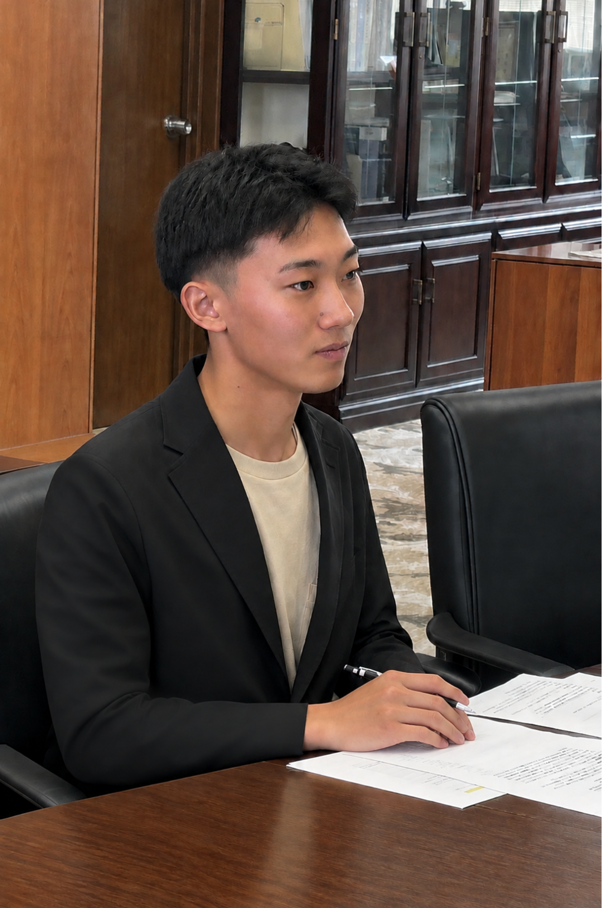

見据えるは、その先。
皆を、良き日本へ導く。
佐賀大学大学祭中央実行委員会 委員長

| 氏名 | 豊﨑 光庸 |
|---|---|
| 所属 | 佐賀大学 経済学部 経営学科 |
| 役職 | 佐賀大学大学祭中央実行委員会 委員長 |
| 主な活動 | 第30回佐賀大学大学祭の開催・運営を指揮 |
| 党首 | 中実保守党 |
| 信条 | 天皇陛下万歳 |
節目となる第30回の佐賀大学大学祭を、中央実行委員会委員長として開催します。
2027年10月23日（土）・24日（日）
佐賀大学 本庄キャンパス
新時代へ出港だー！！
中実の活動を始める前には、委員全員で「君が代」を斉唱する。
中実の活動場所には、天皇陛下のお写真をお飾りする。
日本を愛し、日本を貶める言動には毅然とした態度で臨みます。